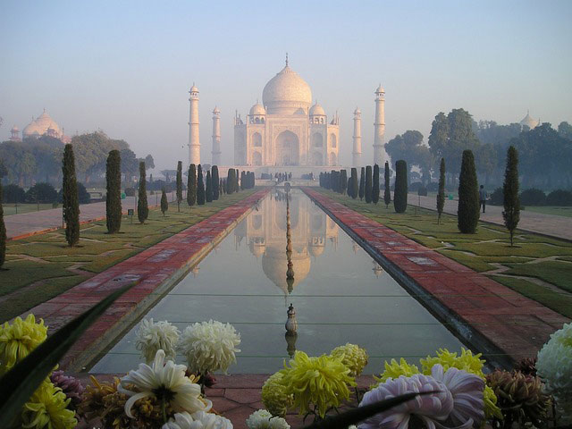
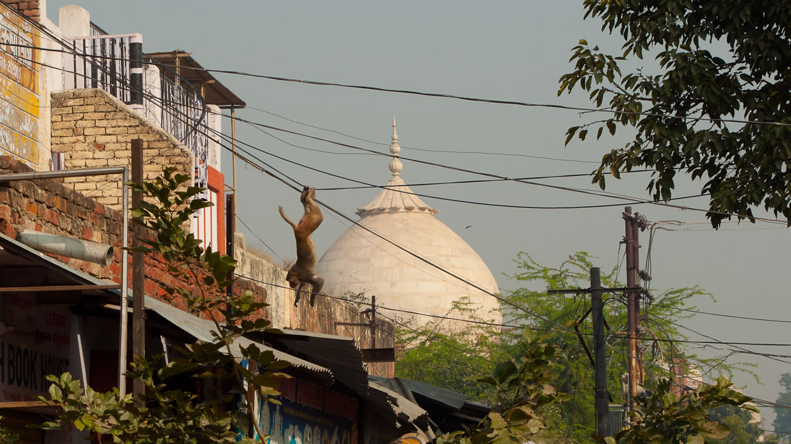
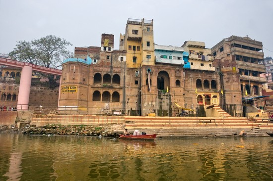
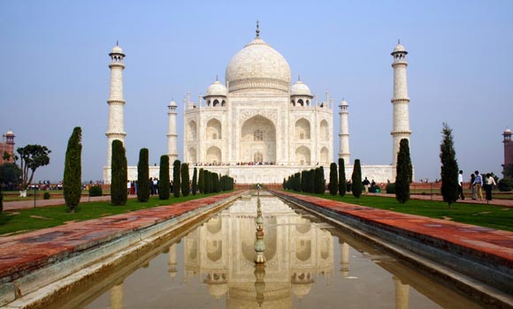
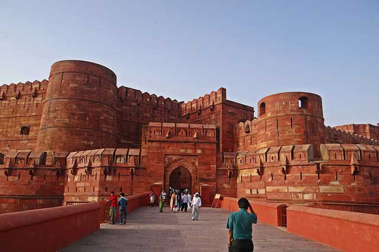
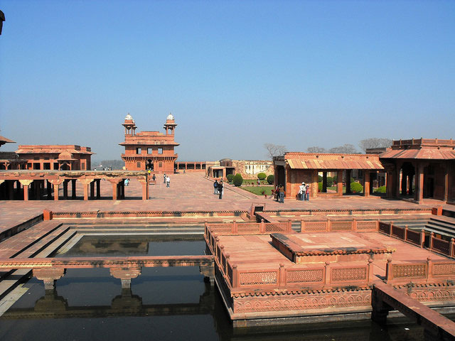
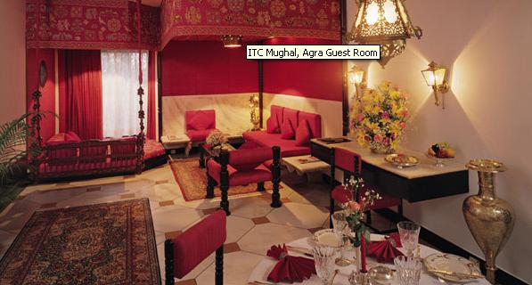
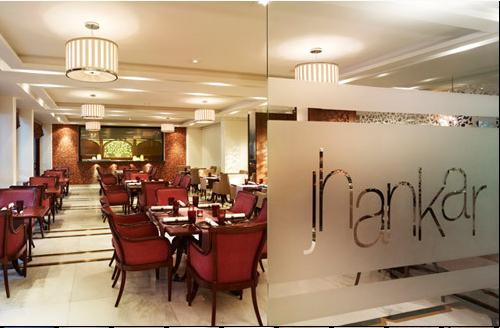

|  | |||
Destination Agra |
Blessed with one of the seven wonders of the world is one of the most prominent tourist destinations of Uttar pradesh. Agra is also known as the Land of palaces. Not just palaces, it also has a lot of intricate and beautiful architecture. Even the tombs are elaborately adorned. Agra is the perfect spot for a tourist and students of Architecture. Even the climate in Agra is very inviting and suitable.  The city is well designed, where even the houses show huge detailing in their design. On close inspection, even the interiors of the buildings show the unreal imagination that the architects probably had. Every building, looks like it had been designed to adorn the city, designed artistically from every angle. Even the food speaks greatly about the spicy Indian Cuisine. It is a city with rich cultural, historical, architectural and religious attachments. It is a city which is synonymous with the history of India. Over the centuries it has enriched the nation with its philosophical contributions. Agra is one of the most important favorite destinations of the world wide travel lovers owing to its exceptional collection of religious places, monuments, forts, palaces and other places.Agra has found its mention in the famous Hindu epic Mahabharat as the forest of Agraban close to Mathura. Badal Singh founded the city in 1475. Sikandar Lodhi made Agra his capital city. Later, Babur defeated the Lodhis to capture the city situated on the banks of River Yamuna and thus, the long association of Mughals with Agra started. The Mughal love of architecture translated into  beautiful monuments such as Taj Mahal, Agra Fort and Fatehpur Sikri . |
||
Highlights - Agra |
|||
|  | Taj Mahal You cannot think of Agra without thinking of Taj Mahal.Taj Mahal, the white marble beauty was constructed by Shah Jahan in memory of his beloved wife, Mumtaz Mahal. |
 | The Agra Fort The The 16th century monument is yet another proof of the architectural brilliance of Mughals.… |
|  | Fatehpuri Sikri the city was a tribute to Sufi Saint. Fatehpur Sikri is a perfect blend of Indian, Islamic and Persian architecture and it was built using red sandstone. |
||
Best Hotels In Agra |
|||
|  | ITC Mughal, Agra ITC Mughal, Agra is the only Indian hotel that has won the esteemed Aga Khan Award for the near perfect illustration of Mughal architecture. This illustrious hotel recreates the aura |
||
|  | The Taj Gateway Hotel The Gateway Hotel, Agra, is restful retreat and an ideal spot for a business or leisure stay offering a glorious view of The Taj Mahal from most rooms... |
||
| BOOK YOUR HOTEL NOW | |||